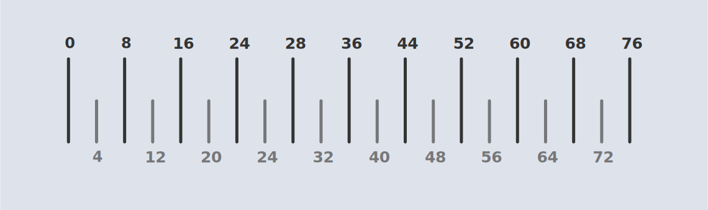
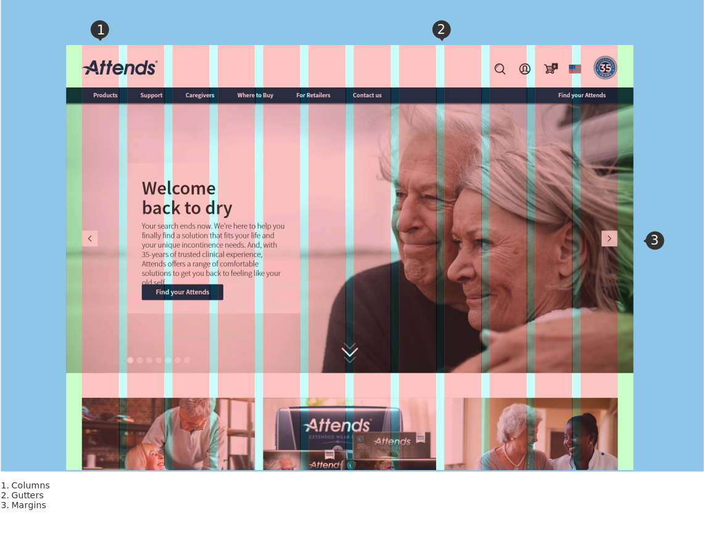

Layout & Architecture
Understanding layout
Digital Center of Excellence (DCoE) layouts encourage consistency across platforms, environments and screen sizes by using uniform elements and spacing.
Predictable
User Interface’s should use intuitive and predictable layouts, with consistent interactive areas and spatial organization.
Consistent
Layouts should use a consistent grid with margins and padding.
Responsive
Layouts are adaptive and react to input from the user, device and screen elements.
Structure
DCoE layouts are visually balanced and can be used to create consistent spacing with typography and other page elements. Most measurements apply to a 16px based grid whilst smaller components, such as iconography and typography, can align to a 4px based grid.
Grid
Responsive layout grid
The responsive layout grid adapts to screen size and orientation, ensuring consistency across layouts.
Columns
Content is placed in the areas of the screen that contain columns.
Column width is defined using percentages, rather than fixed values, to allow content to flexibly adapt to any screen size. The number of columns displayed in the grid is determined by the breakpoint range (a range of predetermined screen sizes) at which a screen is viewed, whether it’s a breakpoint for mobile, tablet, or another size.
Gutters
Gutters are the spaces between columns. They help separate content. Gutter widths are fixed values at each breakpoint range. To better adapt to the screen, gutter width can change at different breakpoints. Wider gutters are more appropriate for larger screens, as they create more whitespace between columns.
Margins
Margins are the space between the content and the edge of the screen. To better adapt to the screen, the margin width can change at different breakpoints. Wider margins are more appropriate for larger screens, as they create more whitespace around the perimeter of the content.
Themes
Themes are used to customize component styles to fit the specific aesthetic of a brand or product.
Theming basics
Themes are used to modify existing components to fit a specific visual style. Using brand variables, developers can easily customize all components by changing a set of universal style values, eliminating the need to modify individual components.
Customizing a theme
The default theme acts as a starting point; from there designers and developers can define how their own components and styles deviate from the default. Altering one, some, or all of the default variable values will result in a new theme. The developer then packages those new values into a new theme stylesheet which will replace the values of the default theme.
Variables
With variables, the code only needs to be changed in one place to see the effect system-wide. Variables are used across all components and help keep global patterns and styles consistent. Amongst others, typography, iconography, colors, sizing, spacing, shape and grid patterns are all customizable variables that we allow to change.
Styling your theme - Basics
To start customizing your theme, you’ll need to modify the variables in your project’s variables.scss file. By default, each theme starts off with the Attends’ baseline values.
Typography
To change your theme’s typography, we recommend using a font-family that best reflects your style.
Shape and size
The characteristics of some components can be customised to suit your brand or needs. For example buttons can have rounded corners, be square or circular if required. Please see each component’s specification for more information.
Color
To change your theme’s color scheme, replace the default HEX color values with your brand’s HEX color values. RGBA values can also be used.
Spacing
Spacing is an important — and often overlooked — part of visual design. This UI/UX Guide takes a lot of the guesswork out of spacing to help designers and developers deliver clear, functional layouts.
Consistent spacing creates visual balance that makes the user interface (UI) easier for customers to navigate. It is important to apply consistent spacing to improve the quality of the UI.
The spacing system
All spacing for components and typography is done in increments of 4 pixels. This 4px value forms the basic unit of measurement for spacing.
Typography doesn’t use a traditional baseline grid. Instead, line heights are set in increments of 4px and spacing is measured from the edges of the text boxes.
Many elements are sized in increments of 20px to match the line height of body text. This makes it easy to create clear and harmonious layouts.
For example, the standard size of the avatar element has been chosen to match the line height of the body text.
How to choose spacing
Use less space between small components, or components that share a close functional relationship.
Use more space between large components, or between components which are less functionally related.
Coordinate small and large values, along with structural components like cards, to create visual groupings of related things. This will help customers understand the interface and make it easier for them to find what they are looking for.
For screens with specialized layouts, adjust overall spacing based on the density of the content. For example, a simple login screen on desktop display has more room to breathe, so more space can be used.